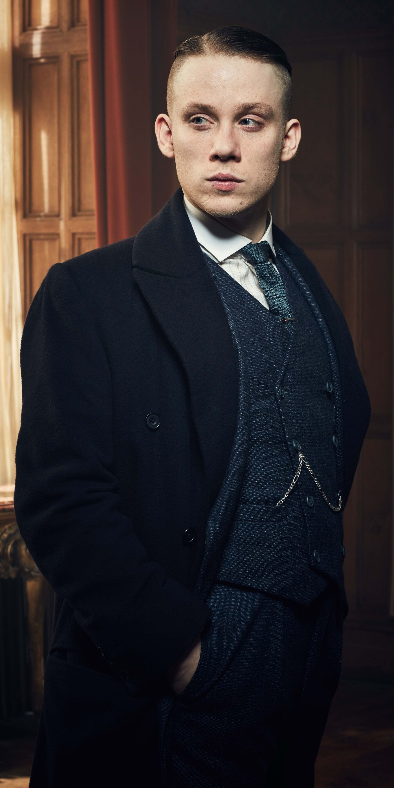

Funfacts
Podczas kręcenia jednego sezonu Cillian Murphy wypala około 3 tysięcy ziołowych papierosów.

Tommy i Alfie

Sceny gdzie występuje Tommy Shelby i Alfie Salomons były kręcone na jednym ujęciu aby zachować dynamikę, którą aktorzy mieli pomiędzy sobą podczas grania.
Prawdziwy gang
Czyli jak kreacja postaci serialowych odpowiada prawdziwym członkom gangu.


Nic nie je
Jedyna scena, w której widzimy Tommy’ego kiedy coś je, to scena z miętą S03E03.

Peaky haircut
Cillian Murphy nienawidzi fryzury, którą ma w serialu.
Copyright 2025